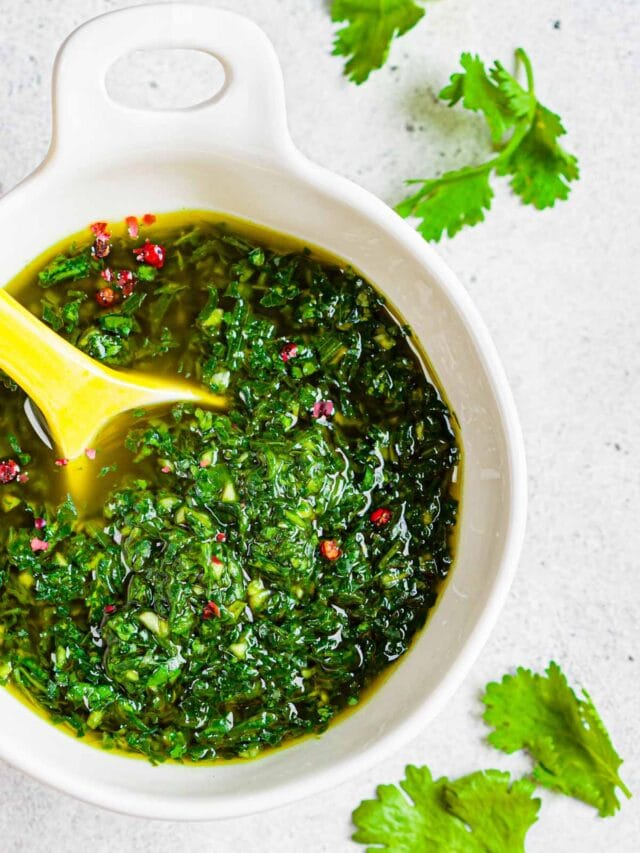

Chimmichuri

Chimichurri - Description
Chimichurri is a delicious sauce from Uruguay and Argentina that is often served alongside barbequed meats
Chimichurri has a very light herbal taste to it, as well as a touch of spice, and pairs great with salads as well!
Chimichurri - Ingredients
- 1/2 cup olive oil
- 2 TBsp red wine vinegar
- 4 TBsp minced garlic
- 1/2 cup chopped parsley
- 1 TBsp sliced red chili
- 1 Tsp dried oregano
- A pinch of coarse salt
- Pepper, to taste
Chimichurri - Steps
- Mix all ingrediants together in a bowl. Let sit for 1-2 hours.
- Chimichurri is best prepared earlier than needed. Refridgerate for 24 hours.
- Use as marinade or save for later and use as a dipping sauce or salad dressing.